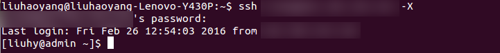
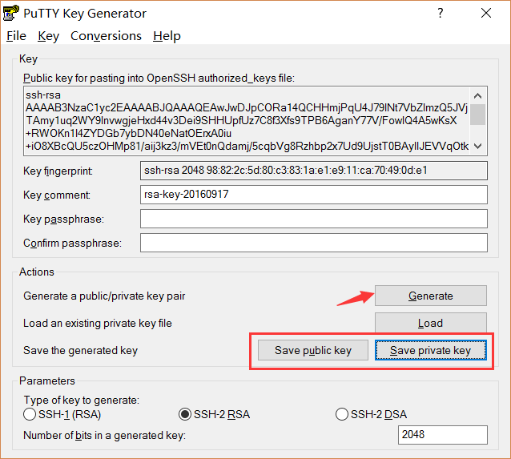
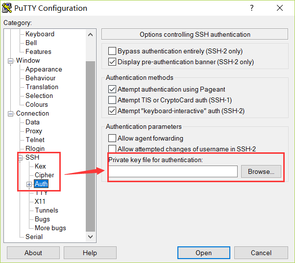

登录到工作站使用工作站之前，你必须拥有一个工作站账号才能进行任务提交。申请工作站账号请联系工作站管理员： 使用Linux/Mac OS使用这两个系统的用户推荐用终端远程登录到工作站服务器。
之后使用如下命令： $ ssh username@ip_address -X ‘$’为 Shell 提示符，无需输入。username 为你的用户名，ip_address 是我们的服务器 IP 地址，-X 是开启 X11 Forwarding，此功能用于使用图形界面，如果不需要此功能可以不填写。 输入你的密码，如果出现以下界面表示登录成功。此后可以在此终端里面进行工作站的操作。  注意：输入密码时，终端的输入区域不会显示任何字符，但是密码已经输入进去了。 成功登录后，所在路径为个人的 Home 文件夹，绝对路径为 /public/home/用户名 ，你可以任意访问和修改个人文件夹下的所有内容。 想要登出工作站时，执行下面的命令。不要直接关闭终端。 $ exit 初次登录时，系统会强制你修改密码，请务必设置复杂一点的密码，修改完毕后重新登录。 如果想要再次修改密码，请使用下面的命令。同样，更改密码时终端输入区域不会显示任何字符。 $ passwd 使用Windows在 Windows 操作系统中，你需要使用任意一种 ssh 客户端来远程登录到工作站服务器。 建议使用 PuTTY 客户端。 安装完毕后，按照如下的方式远程登录工作站（使用方法以 PuTTY 为例）：
想要登出工作站时，请输入如下语句。不要直接关闭 PuTTY。 $ exit 初次登录时，系统会强制你修改密码，请务必设置复杂一点的密码，修改完毕后重新登录。 如果想要再次修改密码，请使用下面的命令。同样，更改密码时终端输入区域不会显示任何字符。 $ passwd 配置 SSH使用Linux/Mac OS配置 .ssh/config每次连接服务器都要输入用户名和服务器地址似乎有些麻烦，如果可以记录不同 SSH 配置 会给使用带来很大方便。在这里我们需要借助 .ssh/config 这个文件。 首次使用 SSH 时，本地计算机中是没有这个文件的，我们必须手动创建它。 liuhy@laptop:~$ cd ~ # 进入本地用户 HOME 目录 liuhy@laptop:~$ mkdir -p .ssh # 创建 .ssh 文件夹，如果已经存在则什么也不做 liuhy@laptop:~$ chmod 700 .ssh # 更改权限，这个文件夹的权限必须只对拥有者可读写 liuhy@laptop:~$ cd .ssh liuhy@laptop:.ssh$ touch config # 创建 config 文件 liuhy@laptop:.ssh$ chmod 600 config # 更改权限，这个文件必须仅对拥有者可读写 创建完毕后，在 .ssh/config 中添加如下内容：
Host rule-name
HostName xxx.xxx.xxx.xxx
User user
Port 22
以上配置的含义是，配置一个名称为 rule-name 的匹配规则，服务器地址是 xxx.xxx.xxx.xxx，使用的服务器用户是 user，访问 22 端口。设置的时候需要 把以上内容替换成真实的信息。其中规则的名称可以随便起。 成功配置后，假设我的 rule-name 设置为 bicmr，那我下次登录只需要执行 ssh bicmr 则 SSH 客户端就会在 .ssh/config 文件中匹配对应的规则，而后套用登录参数， 从而达到省略用户名和 IP 地址的目的。此配置对 OpenSSH 的其他程序也生效。 例如使用 scp 时也可以用这个配置 scp bicmr:a.txt . 这会将目标服务器 HOME 目录下的 a.txt 复制到当前目录，非常方便。 如果你有多个服务器，只需要在 .ssh/config 文件中用空行将不同规则隔开即可。 几点说明
配置无密码登录配置 .ssh/config 之后，我们每次使用还是要输入密码。然而我们不能把密码写在 config 文件 里，而需要使用 SSH 密钥来完成无密码登录。这种无密码授权仅对你自己的个人计算机 有效，别人是无法登录你的服务器账号的，所以请放心使用。 首先，请在本机命令行中输入以下语句来生成 SSH 密钥对（如果之前生成过就无需执行 此步骤，否则可能会覆盖之前生成的密钥）： $ ssh-keygen -t rsa -b 4096 其中 -t rsa 表示使用 RSA 算法；-b 4096 表示加密位数是 4096，位数一般是 2 的幂次，越大则加密强度越高。生成过程中，系统会询问你 SSH 密钥对的保存位置，以 及对应的密码等。在这里我们使用默认的保存位置，不对 SSH 密钥设置密码。 因此只需要连续点击三次 Enter 即可。 生成好的密钥对会保存在默认目录 $HOME/.ssh/ 下，文件 id_rsa 和 id_rsa.pub 就是刚刚生成的密钥对。请将 id_rsa.pub 文件复制到服务器端（可使用 scp 命令）， 复制的过程中需要输入你的密码。 此外，请保管好 id_rsa 文件，不要将其复制给他人。 最后，登录到服务器端，输入登录密码，进入到 id_rsa.pub 文件所在的目录下，输入以下命令： $ cat id_rsa.pub >> ~/.ssh/authorized_keys 至此，SSH 无密码配置已经完成。下次登录或者远程复制时系统不会提示你输入密码。 建议在配置结束之后确认一下服务器端的文件与文件夹的权限。正确的配置是 .ssh 文件夹的权限为 700，即仅所有者拥有完整的权限；.ssh/authorized_keys 文件的权限为 600，即仅所有这拥有读取和写入权限。我们的工作站已经自动替你完成了这一配置，不过还是建议所有用户了解一下这个细节。 [liuhy@admin ~]$ ls -dl .ssh; ls -l .ssh/authorized_keys drwx------ 2 liuhy users 89 Mar 27 13:53 .ssh -rw------- 1 liuhy users 2034 Oct 19 2016 .ssh/authorized_keys 使用Windows首先，使用 PuTTYGEN 程序（该程序和 PuTTY 在同一个压缩包内）生成 SSH 密钥。  生成完毕后，请务必点击 Save Private Key 将密钥保存下来，密钥的格式为 ppk，可以不设置密钥的密码。 对于已经存在的 ppk 密钥文件，可以用这个工具打开并查看该文件的公钥部分（上图中最上面 ssh-rsa 开头的一长串文字）。 然后，你需要使用密码登录服务器，将上述图中公钥部分粘贴到 $HOME/.ssh/authorized_keys 文件的末尾。 最后你需要完成本地的登录设置。打开 PuTTY 程序，载入你要使用 SSH key 的 Session 进行导入。点击左侧的 SSH -> Auth，在右侧选择刚才存储的 ppk 密钥文件。  保存当前的会话设置，这样可以永久生效。 |